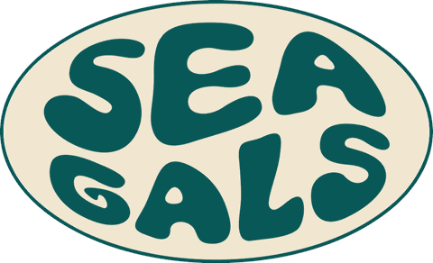
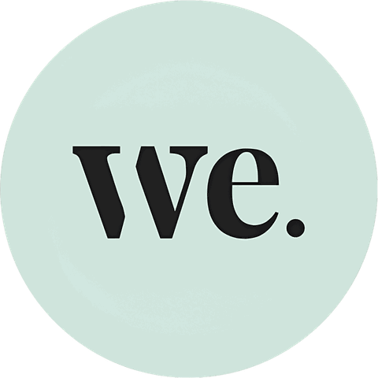

“We’d been talking about taking the community somewhere for two years and never got past a spreadsheet. Tru had it costed and dated in about six weeks. We brought the people; they did absolutely everything else.”
Gals Who TravelCommunity & events
Partner logos — demo (logo wall + testimonial carousel)
In Good Company


“We’d been talking about taking the community somewhere for two years and never got past a spreadsheet. Tru had it costed and dated in about six weeks. We brought the people; they did absolutely everything else.”
Gals Who TravelCommunity & events
“Our lot care about the water and not much else. Tru actually built the trip around that instead of bolting a surf morning onto a standard itinerary, which is what everyone else offered us.”
Sea GalsSurf & ocean community
“Half our community had never travelled outside their own country. Knowing there was someone local with them the whole way is the thing that turned a maybe into a booking.”
Amigas Y Más SocialLatina travel social
“Everyone booked on their own and came home with a group chat that is somehow still going a year later. That is the entire product as far as our members are concerned.”
Someday Travel ClubSolo travel club
“The links just work. We post, people book, and the number we see at the end of the month is the number we expected — which is not something we can say about every programme we’ve run.”
DWHCreator collective
“Nobody asked us to change how we talk to our audience. They sent the assets, answered questions fast, and otherwise got out of the way. That is rarer than it should be.”
We Got You BooWomens travel community